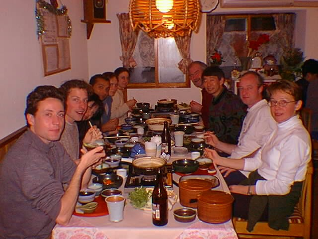

| HIKE DESTINATION: | Cross-country skiing: Urabandai, Fukushima |
| TRANSPORT DETAILS: | Car: Joban and Ban-etsu Expressways - detailed map from Ban-etsu Expressway is on the Maverick (lodge) pamphlet. Travel time: approx. 4 hours each way. Departed 7-11 at 7:30 AM - arrived at Maverick around 11:30 AM. |
| MAPS/GUIDEBOOKS: | promotional pamphlets |
| HIKE DESCRIPTION: | Cross country skiing in Urabandai area. There are some trails but you can also go skiing on lakes in the area. |
| ACCOMMODATION DETAILS: | Maverick Lodge (highly recommended):
nice place; good food; exceptional service. phone: (0241) 32-2016 fax: (0241) 32-2935 email: maverick@mxg.meshnet.or.jp |
| ONSEN DETAILS: | There are several onsens in the
area. We tried the onsen at the Urabandai Nekoma Hotel (highly
recommended); exceptional rotemburo; only 1000 yen - towels,
soap and shampoo, combs, razors provided; close to Maverick.
Phone: (0241) 37-1111 http://www.mwnet.or.jp/resort/nekoma/index.html |
| NUMBER OF PARTICIPANTS: | 10 |
| WEATHER: | Fine |
| OTHER COMMENTS: | The prepared trails are easy enough for beginners and lake skiing is not at all difficult. Those looking for a more challenging route would have to research other trails |

Photograph by Terry Saito